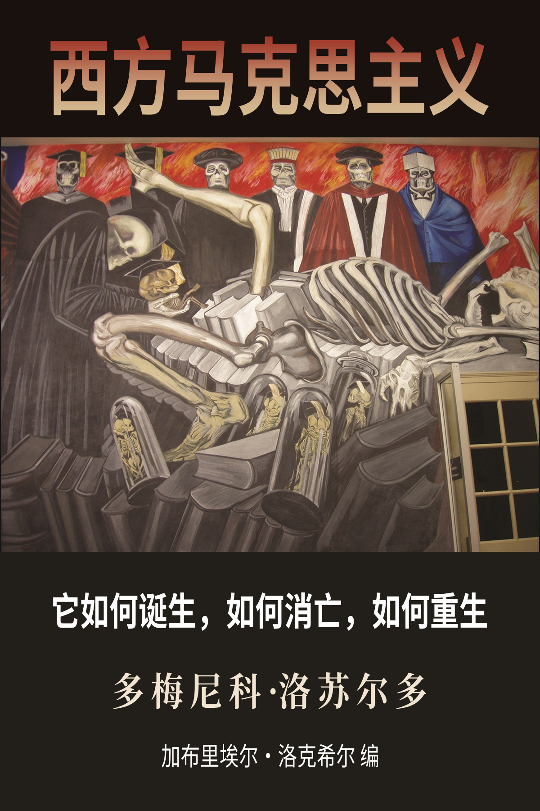

西方马克思主义
0x00 如何阅读
- 【PC/手机】用户均可从这个链接直接阅读
- 【手机】用户若加载时间过长，也可以阅读纯文字版：
（1）注册 一个 Github 账号
（2）点击此项目仓库(wm-web)右上角的 Star 和 Fork 按钮
（3）从 Google/App Store 搜索并安装 APP 【Github】 并登录
（4）在【仓库】中找到 wm-web，点击打开
（5）点击【浏览代码】可打开仓库文件，在路径gitbook/markdown/zh下即为各个章节的内容 - 希望热心的读者能积极参与纠错、反馈阅读中遇到的各种问题，电报群：未竟共同体
0x10 内容预览

0x20 项目简介
这是《西方马克思主义：它如何诞生，如何消亡，如何重生》 WEB 版的汉化项目，也是re0-web的一个fork。目前每个章节的完整汉化流程包括：
- 翻译（英 -> 中）
- 润色（使得上下文表达语句意思更贴近中文环境）
- 校对（专有名词修正、所有章节一致化）
- 编排（文档格式）
这是一个知识开源计划的试水项目。翻译环节用的是电子书翻译器 (ETCP)的自定义引擎(Qwen2)+自定义词汇表，润色和校对环节需要每个读者的参与和反馈 (欢迎提issue/开discussion讨论译法) 、优化排版和修复注释链接 (欢迎直接pr) 。
更多翻译详情请见译者注释
看中译本还不如直接看机翻的呢，高手都是读机翻的。
——张正午
为了提供高质量的机翻文本作为开源翻译的基底，本项目参考了拉黑字幕组译作中的用语习惯，制作出上千行的自定义词汇表以确保专业术语的翻译准确性，而非沉浸式翻译那种无脑机翻。在对比过谷歌翻译、DeepL和各种语言模型之后，最终选择用DeepL初翻+Qwen2.5修复+人工校对+Qwen2.5润色的方式生成了可读性较高的翻译结果。
两种模式的根本不同点在于他们对软件排错有着完全对立的认识。我从Linux的经验出发，证实了这样一个命题：“只要眼睛多，bug容易捉。”
——Eric S.Raymond 《大教堂与集市》
在未来，绝大多数商业公司/出版社所采用的“大教堂”模式将被开源世界采用的“集市”模式所取代。这个变革不应局限于软件行业，也应燎原于文化行业。让书友们像程序员给软件源代码排错那样，来校对自由开源的电子书吧！
0x30 相关资源
- 洛克希尔
- Gabriel Rockhill, "The Imperial Theory Industry & the Compatible Left Intelligentsia"
- Why Losurdo's Western Marxism Matters (feat. Gabriel Rockhill)
- Gabriel Rockhill, “The Intellectual World War: Class Struggle in Theory"
- Gabriel Rockhill, "Western Marxism: From the New Left & Žižek to Stalin, USSR & China"
- Gabriel Rockhill | Why Slavoj Žižek is Capitalism's Court Jester
- 【访谈】齐泽克是资本主义的宫廷小丑吗？｜Slavoj Zizek： Capitalism's Court Jester？〖熟肉双语｜罗克希尔〗
- The People vs. Slavoj Žižek w/Gabriel Rockhill
- Gabriel Rockhill: Western Marxism, Imperialism, Slavoj Zizek, Stalin, USSR, China, Deng Xiaoping
- US Protests & Marxist Critique of Žižek, Foucault, Arendt & the Frankfurt School, w Gabriel Rockhill
- Western Marxism is not anti-colonial w/ Gabriel Rockhill
- Gabriel Rockhill, “The Global Theory Industry & Left Anti-Communism"
- Gabriel Rockhill, "Are Fascism and Liberalism Partners in Capitalist Crime?"
- Gabriel Rockhill, “The Myth of the ’68 Thinkers"
- Re0：从零开始的异世界生活 （WEB 版）
- 电子书翻译器 (ETCP)
- 翻译的现代性：译者任务、机械复制时代与文本星丛 S2EP24 - 例外状态 State of Exception
- Vol 27 “翻译”作为一种女性主义实践 - 歧义 Disagreement
- 李新雨｜翻译之为精神分析家的任务
0x40 许可证和版权
代码基于GNU通用许可协议第三版发布：GPLv3
这是自由软件：你可以自由地修改和重新发布它。 在法律允许的范围内，不提供任何保证。
翻译内容遵循知识共享许可协议 (保持署名—非商用—相同方式共享)：CC BY-NC-SA 4.0
允许修改和无通知转载，请附上本仓库链接及本声明，禁止商用。
0xF0 致开发者
此项目是利用 Honkit 搭建的，同时兼容在 Github Pages 和 本地（线下） 运行。
关于 本地 环境的搭建可见 honkit-docker-support 的说明